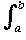

|f (x) - g(x)| ≤ d∞(f, g) for x ∈ [a, b]. So  |f (x) - g(x)| dx ≤ d∞(f, g) dx = (b - a)d∞(f, g).
So if we have d∞(fn, f) < ε for large n, we have d1(fn, f) ≤ (b - a)ε which is small for n large and so (fn)→ f in d1 also.
In fact if (fn)→ f in d∞ it also converges in d2 though the inequality is a bit trickier.